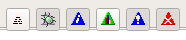

qtpovrayConsole Filters | December 5, 2017 |
POV-Ray emits a lot of text. You can filter, by category, what you want displayed, by pushing each button associated with its catagory.
 The buttons from left to right, are:- Unclassified - General messages. Banner text, credits, statistics.
- Debug - Your POV-Ray debug messages.
- Info - qtpovray information, mostly this is the render command sent to the POV-Ray render engine.
- Statistics - Statistics currently get displayed as Unclassified.
- Warnings - POV-Ray warning messages.
- Errors - POV-Ray errors. You probably never want to filter these out.